Fit a long passage into Xiaohongshu's mainstream 3:4 (1080×1440) image-text: a big-title cover plus auto-paginated body pages, all rendered in the chosen palette — ready to post.
把一段长文「fit」进小红书主流的 3:4（1080×1440）图文：第 1 张封面（大字标题）+ 后续内页（自动分页），正文用指定配色生成，可直接发小红书。
A WorkBuddy / CodeBuddy Skill: when the user mentions a palette theme name (e.g. "Northern Morning", "Twilight Violet") and asks to "generate images / make image-text / create a Xiaohongshu note / use XX palette", it automatically generates a full set of PNGs (cover + pages) in that palette.
WorkBuddy / CodeBuddy 的 Skill：当用户提到某个配色主题名（如「北境清晨」「暮光紫罗兰」）并要求「出图 / 做图文 / 生成小红书笔记 / 用 XX 配色」时，自动用该配色生成一整套 PNG（封面 + 内页）。
scripts/palettes.py — add one entry to add a new palette.scripts/palettes.py，加一项即可新增。| Group | Palette names |
|---|---|
| Primary / Image-sourced | Deep Blue & Gold, Autumn Warm Brown, Blue-Brown Coffee, Healing Purple Invert, Beige & Black-Red, Northern Morning, Autumn Letter, Oat Latte, Midnight Study, Twilight Violet, Burgundy Theatre, Soft Mist Rose, Whitespace Berry Purple |
| Classic suggestions | XHS Classic Pink, Dopamine Warm Orange, Morandi Low-Saturation, Cream Off-White, Fresh Macaron, Dark Luxe Gold, Intellectual Blue |
| Additional classics | Klein Blue, Guochao Red-Gold, Emerald Jade, Taro Purple Bright, Avocado Mint, Maillard Caramel, Salt Minimal Grey, Tomato Vitality Red |
Every palette guarantees sufficient contrast between background / title / body for readable long text (light palettes use a dark neutral body color; dark palettes use a light one).
| 分组 | 配色名 |
|---|---|
| 主配色 / 图片取色 | 深蓝金白、秋日暖棕、蓝棕咖啡、治愈紫反转、米杏黑红、北境清晨、秋日信笺、燕麦拿铁、午夜书房、暮光紫罗兰、勃艮第剧场、柔雾玫瑰、留白莓紫 |
| 经典建议 | 小红书经典粉、多巴胺暖橙、莫兰迪低饱和、奶油米白、清新马卡龙、暗黑高级金、知性蓝 |
| 追加经典 | 克莱因蓝、国潮红金、祖母绿翡翠、香芋紫亮版、牛油果薄荷、美拉德焦糖、盐系冷淡灰、番茄活力红 |
每套配色都保证「背景 / 标题重点 / 正文」三者对比度足够，长文字可读（浅底配色正文用深中性色，深底配色正文用浅色）。
Each image is a "Xiaohongshu cover + 6-color swatch" rendered in the corresponding palette; the bottom swatches, left to right, are: Background / Title / Body / Stroke / Secondary text / Card background.
每张图都是用对应配色渲染的「小红书封面 + 6 色色卡」；底部色卡从左到右依次为：背景 / 标题色 / 正文色 / 描边 / 次要文字 / 卡片底。
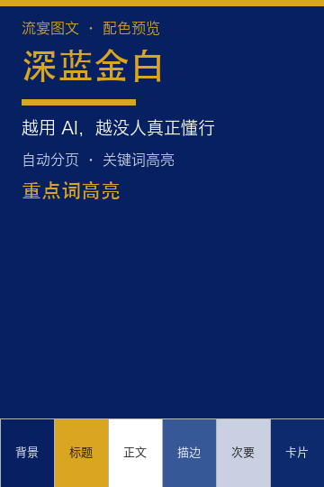 Deep Blue & Gold 深蓝金白 |
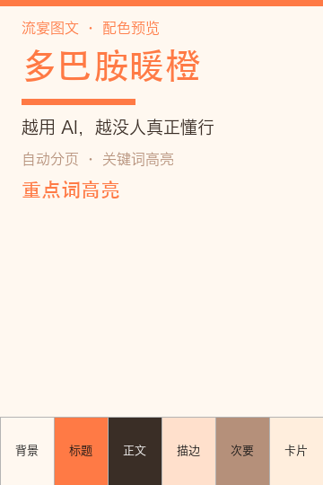 Dopamine Warm Orange 多巴胺暖橙 |
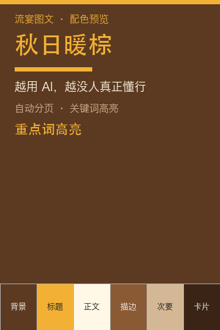 Autumn Warm Brown 秋日暖棕 |
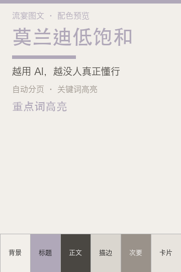 Morandi Low-Saturation 莫兰迪低饱和 |
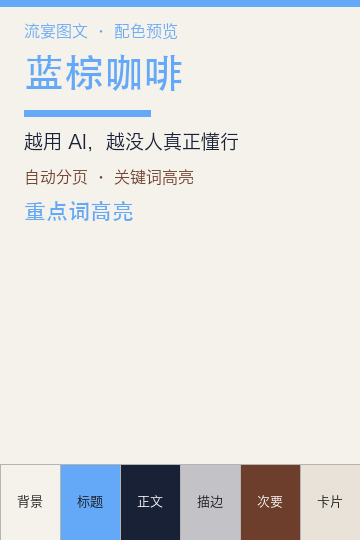 Blue-Brown Coffee 蓝棕咖啡 |
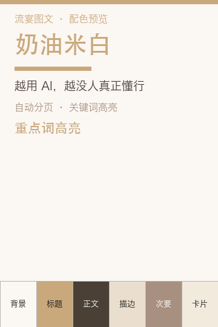 Cream Off-White 奶油米白 |
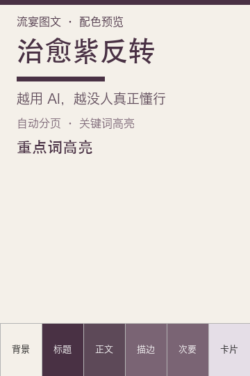 Healing Purple Invert 治愈紫反转 |
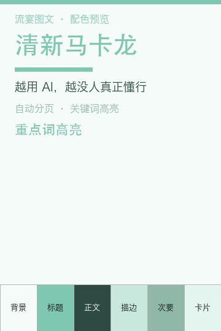 Fresh Macaron 清新马卡龙 |
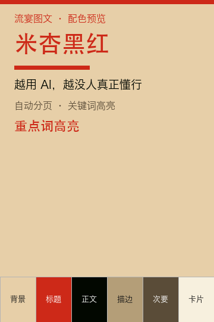 Beige & Black-Red 米杏黑红 |
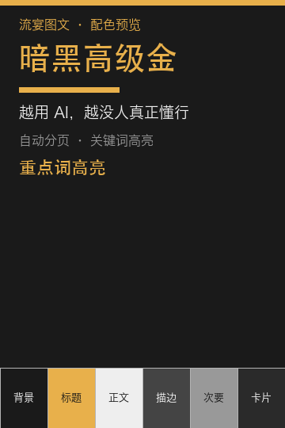 Dark Luxe Gold 暗黑高级金 |
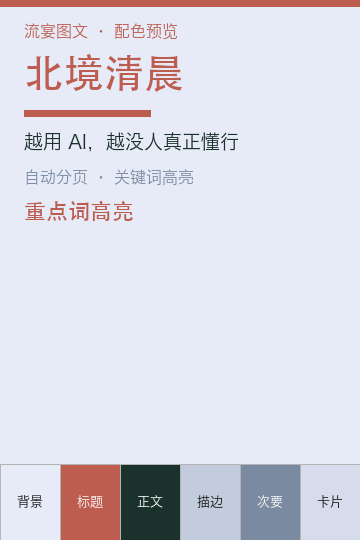 Northern Morning 北境清晨 |
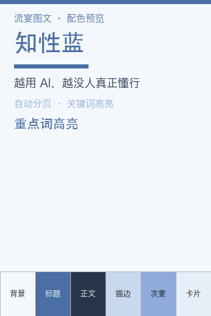 Intellectual Blue 知性蓝 |
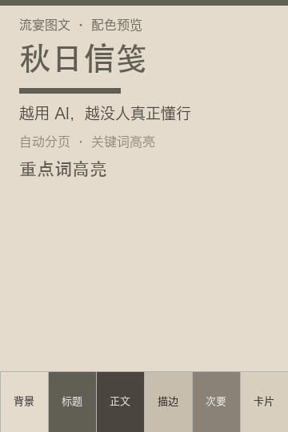 Autumn Letter 秋日信笺 |
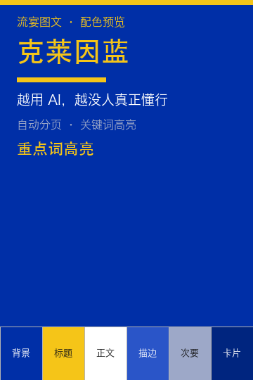 Klein Blue 克莱因蓝 |
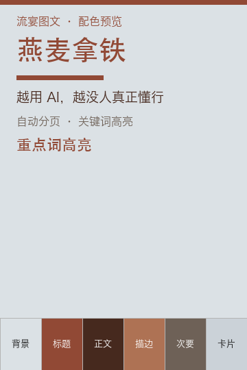 Oat Latte 燕麦拿铁 |
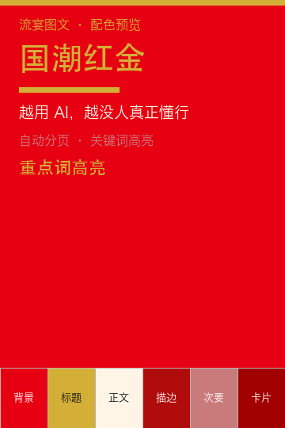 Guochao Red-Gold 国潮红金 |
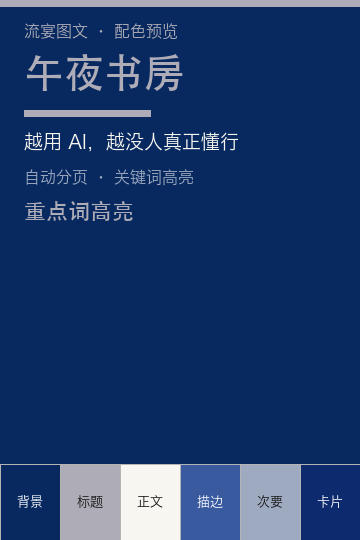 Midnight Study 午夜书房 |
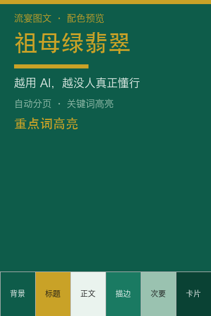 Emerald Jade 祖母绿翡翠 |
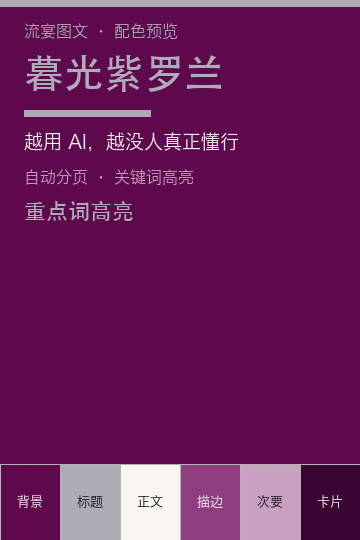 Twilight Violet 暮光紫罗兰 |
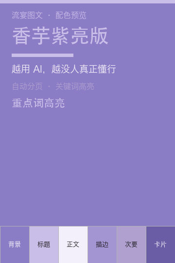 Taro Purple Bright 香芋紫亮版 |
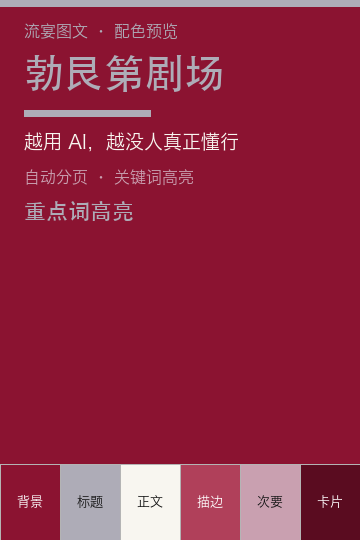 Burgundy Theatre 勃艮第剧场 |
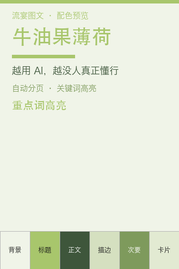 Avocado Mint 牛油果薄荷 |
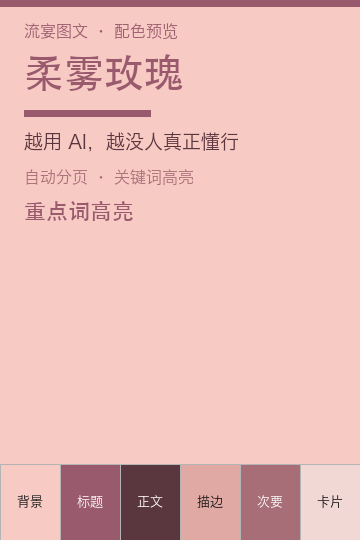 Soft Mist Rose 柔雾玫瑰 |
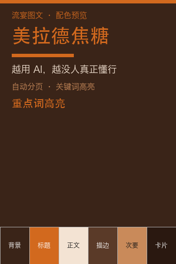 Maillard Caramel 美拉德焦糖 |
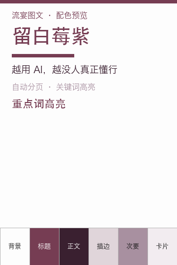 Whitespace Berry Purple 留白莓紫 |
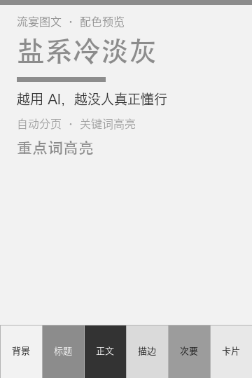 Salt Minimal Grey 盐系冷淡灰 |
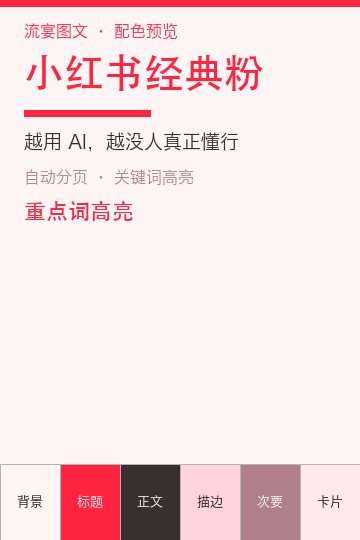 XHS Classic Pink 小红书经典粉 |
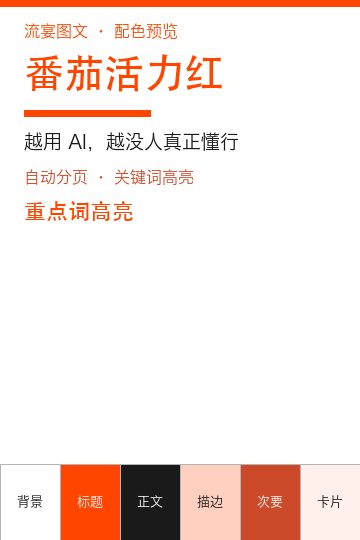 Tomato Vitality Red 番茄活力红 |
Requires Pillow:
依赖 Pillow：
pip install PillowGenerate an example (using the "Northern Morning" palette + tagged text):
生成示例（用「北境清晨」配色 + 一段带标记的文字）：
python scripts/xhs_template.py \
--palette 北境清晨 \
--title "认知公地悲剧" \
--sub "越用 AI，越没人真正懂行" \
--tag "流宴图文" \
--kicker "深度思考" \
--text-file your_text.txt \
--out ./outputIf you use WorkBuddy's managed isolated Python (which already bundles Pillow), run it with that interpreter directly:/Users/robert/.workbuddy/binaries/python/envs/default/bin/python scripts/xhs_template.py ...
若你使用 WorkBuddy 的托管隔离 Python（已带 Pillow），可直接用其解释器运行：/Users/robert/.workbuddy/binaries/python/envs/default/bin/python scripts/xhs_template.py ...
| Argument | Description |
|---|---|
--palette (required) | Palette name, choose from the 28 above. |
--title | Cover main title. |
--sub | Cover subtitle. |
--tag | Footer tag. |
--kicker | Column small label. |
--text | Pass body text directly; or --text-file to read a file (choose one; if neither is given, a built-in sample is used). |
--out | Output directory (default: the script's own directory). |
| 参数 | 说明 |
|---|---|
--palette（必需） | 配色名，从上方 28 套里选。 |
--title | 封面主标题。 |
--sub | 封面副标题。 |
--tag | 页脚标签。 |
--kicker | 栏目小标。 |
--text | 直接传正文；或 --text-file 读文件（二选一，都不给则用内置示例）。 |
--out | 输出目录（默认脚本所在目录）。 |
## Section heading
This is body text, where **keyword** is highlighted in gold.
>> This is a quote card (bordered + accent color).## prefix → section heading (gold + square bullet).>> prefix → quote card.**word** → gold highlight.## 开头 → 章节标题（金色 + 方块 bullet）。>> 开头 → 金句卡片。**词语** → 该词金色高亮。xhs_01_cover.png + xhs_02_page.png + … (1 cover + N pages), all 1080×1440.
xhs_01_cover.png + xhs_02_page.png + …（封面 1 张 + 内页若干），全部 1080×1440。
liuyan-text-to-slides/
├── SKILL.md # Skill metadata & docs (loaded by WorkBuddy)
├── README.md # This file
├── LICENSE # MIT License
├── index.html # Bilingual interactive doc (this page)
├── gen_previews.py # 28-palette preview generator (reproducible)
├── previews/ # 28 palette preview images (for gallery)
│ ├── 01.png
│ └── ...
└── scripts/
├── xhs_template.py # main generator script
└── palettes.py # 28 palette definitions (edit here to add palettes)scripts/palettes.py; to add a palette just add one entry to PALETTES (bg / gold / text / line / dim / panel — six values).jinjin-cover-page; this Skill is the consolidated main entry.scripts/palettes.py，新增配色只需往 PALETTES 里加一项（bg / gold / text / line / dim / panel 六值）。jinjin-cover-page 是同族能力，本 Skill 为整合后的主入口。MIT License © 2026 jinjinli5657
MIT License © 2026 jinjinli5657